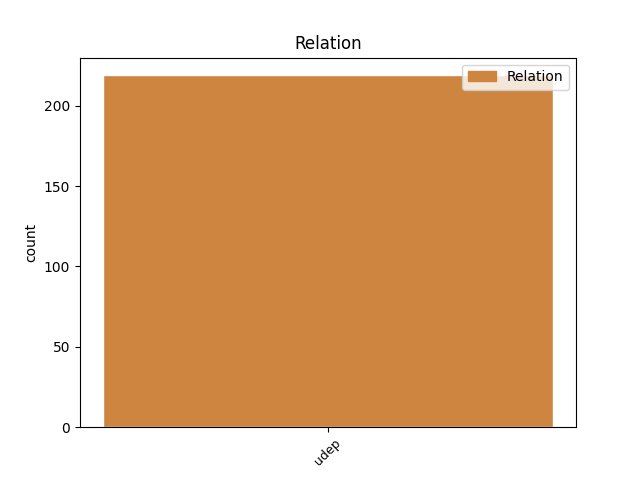
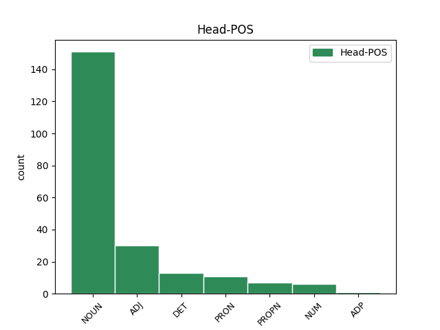
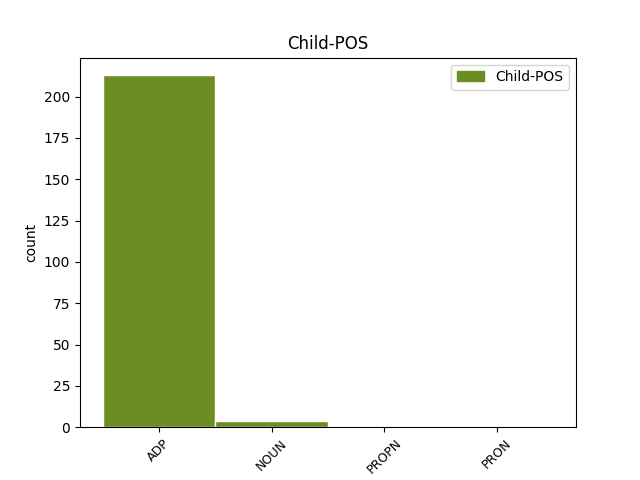

Distribution of features within this leaf



Agreement Rules sorted by frequency.
- When the dependent token is the underspecified dependency(udep) of the head token, and the head token is NOUN
1 od od ADP Sg Case=Gen 3 udep _ msd=Dr|word=od
2 fructala _ _ _ _ 0 _ _ _
3 voda vod NOUN Ncmsg Case=Gen|Gender=Masc|Number=Sing 0 _ _ _
4 samo _ _ _ _ 0 _ _ _
5 da _ _ _ _ 0 _ _ _
6 pač _ _ _ _ 0 _ _ _
7 eee _ _ _ _ 0 _ _ _
8 z _ _ _ _ 0 _ _ _
9 okusom _ _ _ _ 0 _ _ _
10 ampak _ _ _ _ 0 _ _ _
11 da _ _ _ _ 0 _ _ _
12 ni _ _ _ _ 0 _ _ _
13 nič _ _ _ _ 0 _ _ _
14 drugega _ _ _ _ 0 _ _ _
15 kakor _ _ _ _ 0 _ _ _
16 sama _ _ _ _ 0 _ _ _
17 voda _ _ _ _ 0 _ _ _
18 pa _ _ _ _ 0 _ _ _
19 sadje _ _ _ _ 0 _ _ _
1 eem _ _ _ _ 0 _ _ _
2 ker _ _ _ _ 0 _ _ _
3 pač _ _ _ _ 0 _ _ _
4 vseeno _ _ _ _ 0 _ _ _
5 okej _ _ _ _ 0 _ _ _
6 saj _ _ _ _ 0 _ _ _
7 je _ _ _ _ 0 _ _ _
8 [name:personal] _ _ _ _ 0 _ _ _
9 v _ _ _ _ 0 _ _ _
10 redu _ _ _ _ 0 _ _ _
11 pa _ _ _ _ 0 _ _ _
12 to _ _ _ _ 0 _ _ _
13 ne _ _ _ _ 0 _ _ _
14 nimam _ _ _ _ 0 _ _ _
15 nič _ _ _ _ 0 _ _ _
16 čez čez ADP Sa Case=Acc 18 udep _ msd=Dt|word=čez
17 njega _ _ _ _ 0 _ _ _
18 za za ADP Sa Case=Acc 0 _ _ _
19 reči _ _ _ _ 0 _ _ _
20 ampak _ _ _ _ 0 _ _ _
21 tako _ _ _ _ 0 _ _ _
22 pač _ _ _ _ 0 _ _ _
23 recimo _ _ _ _ 0 _ _ _
24 eee _ _ _ _ 0 _ _ _
25 eem _ _ _ _ 0 _ _ _
26 sem _ _ _ _ 0 _ _ _
27 ugotovila _ _ _ _ 0 _ _ _
28 da _ _ _ _ 0 _ _ _
29 vseeno _ _ _ _ 0 _ _ _
30 sem _ _ _ _ 0 _ _ _
31 jaz _ _ _ _ 0 _ _ _
32 bolj _ _ _ _ 0 _ _ _
33 tak _ _ _ _ 0 _ _ _
34 eem _ _ _ _ 0 _ _ _
35 eem _ _ _ _ 0 _ _ _
36 drugačen _ _ _ _ 0 _ _ _
37 človek _ _ _ _ 0 _ _ _
38 kot _ _ _ _ 0 _ _ _
39 on _ _ _ _ 0 _ _ _
40 [all:laughter] _ _ _ _ 0 _ _ _
41 kakorkoli _ _ _ _ 0 _ _ _
42 ne _ _ _ _ 0 _ _ _
1 in _ _ _ _ 0 _ _ _
2 če _ _ _ _ 0 _ _ _
3 bo _ _ _ _ 0 _ _ _
4 kdo _ _ _ _ 0 _ _ _
5 rekel _ _ _ _ 0 _ _ _
6 da _ _ _ _ 0 _ _ _
7 ni _ _ _ _ 0 _ _ _
8 finančnih _ _ _ _ 0 _ _ _
9 sredstev _ _ _ _ 0 _ _ _
10 za _ _ _ _ 0 _ _ _
11 to _ _ _ _ 0 _ _ _
12 da _ _ _ _ 0 _ _ _
13 dvignemo _ _ _ _ 0 _ _ _
14 ne _ _ _ _ 0 _ _ _
15 samo _ _ _ _ 0 _ _ _
16 minimalne _ _ _ _ 0 _ _ _
17 plače _ _ _ _ 0 _ _ _
18 minimalne _ _ _ _ 0 _ _ _
19 pokojnine _ _ _ _ 0 _ _ _
20 ampak _ _ _ _ 0 _ _ _
21 da _ _ _ _ 0 _ _ _
22 naredimo _ _ _ _ 0 _ _ _
23 sistem _ _ _ _ 0 _ _ _
24 tisti _ _ _ _ 0 _ _ _
25 sistem _ _ _ _ 0 _ _ _
26 ki _ _ _ _ 0 _ _ _
27 bo _ _ _ _ 0 _ _ _
28 omogočal _ _ _ _ 0 _ _ _
29 ponosno _ _ _ _ 0 _ _ _
30 življenje _ _ _ _ 0 _ _ _
31 vsakega _ _ _ _ 0 _ _ _
32 slehernega sleheren ADJ Agpmsg Case=Gen|Degree=Pos|Gender=Masc|Number=Sing 0 _ _ _
33 izmed izmed ADP Sg Case=Gen 32 udep _ msd=Dr|word=izmed
34 nas _ _ _ _ 0 _ _ _
35 potem _ _ _ _ 0 _ _ _
36 ta _ _ _ _ 0 _ _ _
37 laže _ _ _ _ 0 _ _ _
38 ali _ _ _ _ 0 _ _ _
39 ne _ _ _ _ 0 _ _ _
40 pozna _ _ _ _ 0 _ _ _
41 proračuna _ _ _ _ 0 _ _ _
42 republike _ _ _ _ 0 _ _ _
43 slovenije _ _ _ _ 0 _ _ _
Disagree Examples:
1 hvala hvala NOUN Ncfsn Case=Nom|Gender=Fem|Number=Sing 0 _ _ _
2 za za ADP Sa Case=Acc 1 udep _ msd=Dt|word=za
3 povabilo _ _ _ _ 0 _ _ _
1 no _ _ _ _ 0 _ _ _
2 razlogov razlog NOUN Ncmpg Case=Gen|Gender=Masc|Number=Plur 0 _ _ _
3 za za ADP Sa Case=Acc 2 udep _ msd=Dt|word=za
4 smeh _ _ _ _ 0 _ _ _
5 in _ _ _ _ 0 _ _ _
6 dobro _ _ _ _ 0 _ _ _
7 voljo _ _ _ _ 0 _ _ _
8 je _ _ _ _ 0 _ _ _
9 bilo _ _ _ _ 0 _ _ _
10 precej _ _ _ _ 0 _ _ _
11 torej _ _ _ _ 0 _ _ _
12 [name:personal] _ _ _ _ 0 _ _ _
13 je _ _ _ _ 0 _ _ _
14 bil _ _ _ _ 0 _ _ _
15 dobitnik _ _ _ _ 0 _ _ _
16 nagrade _ _ _ _ 0 _ _ _
17 saj _ _ _ _ 0 _ _ _
18 kaj _ _ _ _ 0 _ _ _
19 dosti _ _ _ _ 0 _ _ _
20 ni _ _ _ _ 0 _ _ _
21 mogel _ _ _ _ 0 _ _ _
22 povedati _ _ _ _ 0 _ _ _
23 ker _ _ _ _ 0 _ _ _
24 je _ _ _ _ 0 _ _ _
25 bil _ _ _ _ 0 _ _ _
26 tako _ _ _ _ 0 _ _ _
27 presenečen _ _ _ _ 0 _ _ _
28 tako _ _ _ _ 0 _ _ _
29 da _ _ _ _ 0 _ _ _
30 mogoče _ _ _ _ 0 _ _ _
31 je _ _ _ _ 0 _ _ _
32 še _ _ _ _ 0 _ _ _
33 glavna _ _ _ _ 0 _ _ _
34 stvar _ _ _ _ 0 _ _ _
35 ki _ _ _ _ 0 _ _ _
36 je _ _ _ _ 0 _ _ _
37 povedal _ _ _ _ 0 _ _ _
38 tale _ _ _ _ 0 _ _ _
1 sigurno _ _ _ _ 0 _ _ _
2 ni _ _ _ _ 0 _ _ _
3 preden _ _ _ _ 0 _ _ _
4 je _ _ _ _ 0 _ _ _
5 zavihtel _ _ _ _ 0 _ _ _
6 nož _ _ _ _ 0 _ _ _
7 razmišljal _ _ _ _ 0 _ _ _
8 kakšna _ _ _ _ 0 _ _ _
9 je _ _ _ _ 0 _ _ _
10 zagrožena _ _ _ _ 0 _ _ _
11 kazen kazen NOUN Ncfsn Case=Nom|Gender=Fem|Number=Sing 0 _ _ _
12 po po ADP Sl Case=Loc 11 udep _ msd=Dm|word=po
13 kazenskem _ _ _ _ 0 _ _ _
14 zakoniku _ _ _ _ 0 _ _ _
1 [:voice] _ _ _ _ 0 _ _ _
2 no _ _ _ _ 0 _ _ _
3 po _ _ _ _ 0 _ _ _
4 gimnaziji _ _ _ _ 0 _ _ _
5 si _ _ _ _ 0 _ _ _
6 si _ _ _ _ 0 _ _ _
7 zelo _ _ _ _ 0 _ _ _
8 želela _ _ _ _ 0 _ _ _
9 iti _ _ _ _ 0 _ _ _
10 na _ _ _ _ 0 _ _ _
11 potovanje potovanje NOUN Ncnsa Case=Acc|Gender=Neut|Number=Sing 0 _ _ _
12 po po ADP Sl Case=Loc 11 udep _ msd=Dm|word=po
13 španiji _ _ _ _ 0 _ _ _
1 in _ _ _ _ 0 _ _ _
2 si _ _ _ _ 0 _ _ _
3 služila _ _ _ _ 0 _ _ _
4 denar _ _ _ _ 0 _ _ _
5 v _ _ _ _ 0 _ _ _
6 gorski _ _ _ _ 0 _ _ _
7 koči koča NOUN Ncfsl Case=Loc|Gender=Fem|Number=Sing 0 _ _ _
8 na _ _ _ _ 0 _ _ _
9 ledinah _ _ _ _ 0 _ _ _
10 nad nad ADP Si Case=Ins 7 udep _ msd=Do|word=nad
11 jezerskim _ _ _ _ 0 _ _ _
12 kako _ _ _ _ 0 _ _ _
13 si _ _ _ _ 0 _ _ _
14 zašla _ _ _ _ 0 _ _ _
15 tja _ _ _ _ 0 _ _ _
16 ljubezen _ _ _ _ 0 _ _ _
17 do _ _ _ _ 0 _ _ _
18 gora _ _ _ _ 0 _ _ _